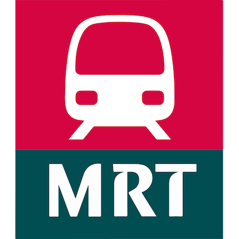

I’ve been to every station in:
 New York
New York Paris
Paris London
London Mexico City
Mexico City Barcelona
Barcelona Berlin
Berlin Chicago
Chicago Singapore
 Oslo
Oslo Stockholm
Stockholm Vienna
Vienna Washington
Washington Bengaluru
Bengaluru Montréal
Montréal Prague
Prague Brussels
Brussels Lisbon
Lisbon Dubai
Dubai Boston
Boston Philadelphia
Philadelphia San Francisco
San Francisco Bilbao
Bilbao Budapest
Budapest Lyon
Lyon Warsaw
WarsawSanto Domingo
 Naples
NaplesRennes
Medellín
 Miami
MiamiI’ve taken the metro in:
 Seoul
Seoul Moscow
Moscow Madrid (60%)
Madrid (60%) Tokyo
Tokyo Busan
Busan Hong Kong
Hong Kong Cairo Rome
Cairo Rome Saint Petersburg
Saint Petersburg Rotterdam (30%)
Rotterdam (30%) Toronto
Toronto Lille (25%)
Lille (25%) Sofia
Sofia Amsterdam (25%)
Amsterdam (25%) Toulouse
Toulouse Cleveland
Cleveland Lagos
LagosI’ve been to these cities:
 Shenzhen
Shenzhen Guangzhou
Guangzhou Istanbul
Istanbul Ōsaka
Ōsaka Bangkok
Bangkok Los Angeles Frankfurt
Los Angeles Frankfurt Sapporo
Sapporo Atlanta
Atlanta Fukuoka
Fukuoka Panama City
Panama City Helsinki
Helsinki Lausanne
Lausanne🏴 Glasgow
 Baltimore
BaltimoreThessaloniki
 Catania
Catania Kazan Genoa
Kazan GenoaWant to visit:
Santiago Milan Taipei Munich Hamburg
Taipei Munich HamburgSão Paulo
Buenos Aires
 Athens
Athens Bucharest
BucharestLima
Nuremberg Copenhagen
CopenhagenRio de Janeiro
 Marseille
MarseilleQuito
🇨🇳 Beijing
🇨🇳 Shanghai
🇨🇳 Chengdu
🇨🇳 Chongqing
🇨🇳 Wuhan
🇮🇳 Delhi
🇨🇳 Suzhou
🇨🇳 Zhengzhou
🇨🇳 Hangzhou
🇨🇳 Xi’an
🇨🇳 Nanjing
🇨🇳 Tianjin
🇨🇳 Qingdao
🇨🇳 Hefei
🇮🇷 Tehran
🇲🇾 Kuala Lumpur
🇨🇳 Changsha
🇨🇳 Changchun
🇨🇳 Ningbo
🇨🇳 Shenyang
🇨🇳 Kunming
🇨🇳 Dalian
🇨🇳 Nanning
🇨🇳 Nanchang
🇨🇳 Fuzhou
🇨🇳 Wuxi
🇨🇳 Guiyang
🇯🇵 Nagoya
🇸🇦 Riyadh
🇨🇳 Harbin
🇨🇳 Foshan
🇨🇳 Xiamen
🇨🇳 Xuzhou
🇨🇳 Shijiazhuang
🇹🇷 Ankara
🇮🇳 Hyderabad
🇮🇳 Mumbai
🇮🇳 Pune
🇨🇦 Vancouver
🇺🇦 Kyiv
🇮🇳 Kolkata
🇺🇿 Tashkent
🇻🇪 Caracas
🇨🇳 Taiyuan
🇨🇳 Jinan
🇯🇵 Yokohama
🇨🇳 Nantong
🇨🇳 Changzhou
🇨🇳 Hohhot
🇨🇳 Shaoxing
🇮🇳 Chennai
🇲🇽 Monterrey
🇮🇳 Ahmedabad
🇶🇦 Doha
🇧🇾 Minsk
🇮🇳 Nagpur
🇨🇳 Luoyang
🇵🇭 Manila
🇯🇵 Kyoto
🇺🇦 Kharkiv
🇯🇵 Sendai
🇯🇵 Kobe
🇦🇿 Baku
🇨🇳 Lanzhou
🇵🇰 Lahore
🇮🇳 Kochi
🇬🇪 Tblisi
🇮🇹 Turin
🇹🇼 Taoyuan
🇮🇳 Lucknow
🇮🇳 Noida
🇨🇳 Ürümqi
🇻🇳 Hanoi
🇮🇷 Isfahan
🇧🇷 Salvador
🇩🇿 Algiers
🇧🇷 Belo Horizonte
🇮🇷 Tabriz
🇮🇹 Brescia
🇰🇵 Pyongyang
🇧🇩 Dhaka
🇺🇸 San Juan
🇨🇳 Dongguan
🇷🇺 Nizhny Novgorod
🇻🇳 Ho Chi Minh City
🇮🇳 Kanpur
🇷🇺 Novosibirsk
🇮🇩 Jakarta
🇦🇺 Sydney
🇰🇿 Almaty
🇮🇳 Gurgaon
🇮🇳 Jaipur
🇮🇳 Navi Mumbai
🇷🇺 Samara
🇦🇲 Yerevan
🇺🇸 Honolulu
🇸🇦 🕋 Mecca
🇷🇺 Yekaterinburg
🇮🇳 Agra
🇺🇦 Dnipro
🇮🇳 Indore
🇮🇳 Patna